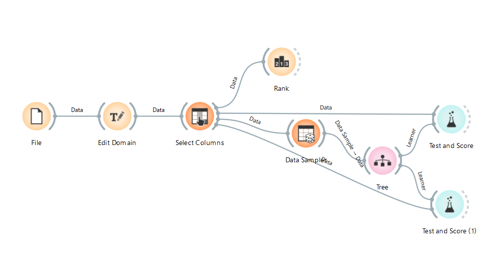
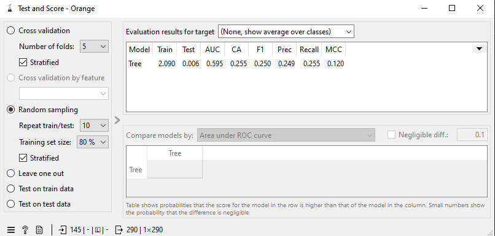

Data Understanding: Higher Education Students Performance Evaluation#
Notebook ini berisi tahapan Data Understanding dari dataset Higher Education Students Performance Evaluation yang diperoleh dari UCI Machine Learning Repository. Tujuan dari analisis ini adalah untuk memahami karakteristik data, mengidentifikasi kualitas data, serta menggali pola awal yang dapat digunakan untuk tahap pemodelan selanjutnya.
Dataset ini berisi data demografis, kebiasaan belajar, dan latar belakang keluarga mahasiswa teknik di sebuah universitas di Siprus pada tahun 2019. Target dari dataset ini adalah Grade (nilai akhir mahasiswa).
Definisi dan Tujuan Data Understanding#
Data Understanding merupakan tahapan awal dalam metodologi CRISP-DM (Cross-Industry Standard Process for Data Mining) yang berfokus pada pemahaman mendalam terhadap data yang akan digunakan.
Tujuan utama dari Data Understanding adalah:
Mengenal karakteristik data — mengetahui jumlah baris, kolom, tipe data, dan rentang nilai
Mengidentifikasi kualitas data — memeriksa missing values, duplikasi, inkonsistensi
Menggali pola awal — menemukan hubungan antar fitur melalui eksplorasi dan visualisasi
Menyusun hipotesis awal — sebelum masuk ke tahap pemodelan yang lebih kompleks
Dataset yang Digunakan#
Item |
Keterangan |
|---|---|
Sumber |
|
Jumlah Instance |
145 baris data |
Jumlah Atribut |
31 fitur + 1 target (Grade) |
Tipe Data |
Seluruh fitur bertipe kategorikal/integer |
Missing Values |
Tidak ada (0 missing) |
Domain |
Sosial Sains — Pendidikan Tinggi |
Tahun |
2019 |
Lokasi |
Siprus (Cyprus) |
Target |
Grade (0=Fail s.d. 7=AA) |
Daftar Atribut dan Deskripsinya#
Dataset ini memiliki 31 fitur yang dikelompokkan menjadi 3 kategori:
Fitur Personal — pertanyaan 1-10 (demografi, beasiswa, transportasi)
Fitur Keluarga — pertanyaan 11-16 (pendidikan, pekerjaan, status orang tua)
Fitur Kebiasaan Belajar — pertanyaan 17-30 (jam belajar, kehadiran, dll)
Fitur Personal (No 1-10)#
No |
Atribut |
Tipe |
Deskripsi |
Rentang Nilai |
|---|---|---|---|---|
1 |
Student Age |
Kategorikal |
Usia mahasiswa |
1=18-21, 2=22-25, 3=di atas 26 |
2 |
Sex |
Biner |
Jenis kelamin |
1=Perempuan, 2=Laki-laki |
3 |
Graduated high-school type |
Kategorikal |
Tipe SMA asal |
1=Swasta, 2=Negeri, 3=Lainnya |
4 |
Scholarship type |
Kategorikal |
Tipe beasiswa |
1=Tidak ada, 2=25%, 3=50%, 4=75%, 5=Penuh |
5 |
Additional work |
Biner |
Pekerjaan tambahan |
1=Ya, 2=Tidak |
6 |
Regular artistic or sports activity |
Biner |
Aktivitas seni/olahraga |
1=Ya, 2=Tidak |
7 |
Do you have a partner |
Biner |
Memiliki pasangan |
1=Ya, 2=Tidak |
8 |
Total salary if available |
Kategorikal |
Total gaji (USD) |
1=135-200, 2=201-270, 3=271-340, 4=341-410, 5=>410 |
9 |
Transportation to the university |
Kategorikal |
Transportasi ke kampus |
1=Bus, 2=Mobil/taksi, 3=Sepeda, 4=Lainnya |
10 |
Accommodation type in Cyprus |
Kategorikal |
Tipe akomodasi |
1=Sewa, 2=Asrama, 3=Bersama keluarga, 4=Lainnya |
Fitur Keluarga (No 11-16)#
No |
Atribut |
Tipe |
Deskripsi |
Rentang Nilai |
|---|---|---|---|---|
11 |
Mothers’ education |
Kategorikal |
Pendidikan ibu |
1=SD, 2=SMP, 3=SMA, 4=S1, 5=S2, 6=S3 |
12 |
Fathers’ education |
Kategorikal |
Pendidikan ayah |
1=SD, 2=SMP, 3=SMA, 4=S1, 5=S2, 6=S3 |
13 |
Number of sisters/brothers |
Kategorikal |
Jumlah saudara |
1=1, 2=2, 3=3, 4=4, 5=5 atau lebih |
14 |
Parental status |
Kategorikal |
Status orang tua |
1=Menikah, 2=Cerai, 3=Meninggal |
15 |
Mothers’ occupation |
Kategorikal |
Pekerjaan ibu |
1=Pensiunan, 2=IRT, 3=Pegawai, 4=Lainnya, 5=Wirausaha |
16 |
Fathers’ occupation |
Kategorikal |
Pekerjaan ayah |
1=Pensiunan, 2=Bapak rumah tangga, 3=Pegawai, 4=Lainnya, 5=Wirausaha |
Fitur Kebiasaan Belajar (No 17-30)#
No |
Atribut |
Tipe |
Deskripsi |
Rentang Nilai |
|---|---|---|---|---|
17 |
Weekly study hours |
Kategorikal |
Jam belajar/minggu |
1=Tidak ada, 2=<5, 3=6-10, 4=11-20, 5=>20 |
18 |
Reading frequency non-scientific |
Kategorikal |
Frekuensi baca non-ilmiah |
1=Tidak pernah, 2=Kadang, 3=Sering |
19 |
Reading frequency scientific |
Kategorikal |
Frekuensi baca ilmiah |
1=Tidak pernah, 2=Kadang, 3=Sering |
20 |
Attendance to seminars/conferences |
Biner |
Kehadiran seminar |
1=Ya, 2=Tidak |
21 |
Impact of projects/activities |
Kategorikal |
Dampak proyek pada sukses |
1=Positif, 2=Negatif, 3=Netral |
22 |
Attendance to classes |
Kategorikal |
Kehadiran kelas |
1=Selalu, 2=Kadang, 3=Tidak pernah |
23 |
Preparation to midterm exams 1 |
Kategorikal |
Persiapan ujian 1 |
1=Sendiri, 2=Bersama teman, 3=Tidak berlaku |
24 |
Preparation to midterm exams 2 |
Kategorikal |
Persiapan ujian 2 |
1=H-1, 2=Teratur, 3=Tidak pernah |
25 |
Taking notes in classes |
Kategorikal |
Mencatat di kelas |
1=Tidak pernah, 2=Kadang, 3=Selalu |
26 |
Listening in classes |
Kategorikal |
Mendengarkan di kelas |
1=Tidak pernah, 2=Kadang, 3=Selalu |
27 |
Discussion improves interest |
Kategorikal |
Diskusi meningkatkan minat |
1=Tidak pernah, 2=Kadang, 3=Selalu |
28 |
Flip-classroom |
Kategorikal |
Metode flip-classroom |
1=Tidak berguna, 2=Berguna, 3=Tidak berlaku |
29 |
Cumulative GPA last semester |
Kategorikal |
IPK semester lalu (/4.00) |
1=<2.00, 2=2.00-2.49, 3=2.50-2.99, 4=3.00-3.49, 5=>3.49 |
30 |
Expected GPA at graduation |
Kategorikal |
Ekspektasi IPK akhir (/4.00) |
1=<2.00, 2=2.00-2.49, 3=2.50-2.99, 4=3.00-3.49, 5=>3.49 |
| 31 | Course ID | Kategorikal | ID mata kuliah | - |
Target#
OUTPUT (Target): Grade — Nilai akhir mahasiswa:
0 = Gagal (Fail)
1 = DD, 2 = DC, 3 = CC, 4 = CB
5 = BB, 6 = BA, 7 = AA
Analisis Distribusi Fitur#
a. Fitur Personal#
Fitur personal mencakup informasi demografis dasar mahasiswa seperti usia, jenis kelamin, tipe SMA asal, beasiswa, dan kondisi sosial-ekonomi.
Student Age (Usia Mahasiswa): Dataset ini menunjukkan bahwa mayoritas mahasiswa berada pada kelompok usia 18-21 tahun (kategori 1), yang merupakan rentang usia khas mahasiswa tingkat sarjana. Kelompok usia 22-25 tahun (kategori 2) dan di atas 26 tahun (kategori 3) memiliki jumlah yang lebih sedikit.
Sex (Jenis Kelamin): Distribusi jenis kelamin didominasi oleh perempuan dibandingkan laki-laki. Ini mencerminkan komposisi demografis khas pada program studi tertentu di bidang pendidikan tinggi.
Scholarship type (Tipe Beasiswa): Mayoritas mahasiswa tidak memiliki beasiswa (kategori 1). Hanya sebagian kecil yang mendapatkan beasiswa 25%, 50%, 75%, atau beasiswa penuh. Hal ini menunjukkan bahwa sebagian besar mahasiswa membiayai pendidikan secara mandiri.
Additional work (Pekerjaan Tambahan): Sebagian besar mahasiswa tidak memiliki pekerjaan tambahan. Ini wajar karena mahasiswa umumnya fokus pada perkuliahan, meskipun sebagian kecil tetap bekerja di luar jam kuliah.
Regular artistic or sports activity (Aktivitas Seni/Olahraga): Mayoritas mahasiswa tidak aktif dalam kegiatan seni atau olahraga secara teratur. Ini bisa menjadi catatan bahwa partisipasi dalam kegiatan non-akademik masih rendah.
Transportation to the university (Transportasi ke Kampus): Bus menjadi moda transportasi utama yang digunakan mahasiswa untuk menuju kampus. Sebagian kecil menggunakan mobil pribadi/taksi, sepeda, atau transportasi lainnya.
b. Fitur Keluarga#
Fitur keluarga mencakup latar belakang orang tua mahasiswa, meliputi tingkat pendidikan, pekerjaan, status pernikahan, dan jumlah saudara.
Mothers’ Education & Fathers’ Education (Pendidikan Orang Tua): Tingkat pendidikan ibu dan ayah didominasi oleh lulusan SMP, SMA, dan S1. Jumlah orang tua dengan pendidikan S2 atau S3 relatif lebih sedikit. Tidak terdapat perbedaan signifikan antara tingkat pendidikan ibu dan ayah secara keseluruhan.
Parental status (Status Orang Tua): Mayoritas mahasiswa berasal dari keluarga dengan status orang tua yang masih menikah. Sebagian kecil berasal dari keluarga bercerai atau salah satu/both orang tua meninggal.
Number of sisters/brothers (Jumlah Saudara): Sebagian besar mahasiswa memiliki 1-2 saudara. Hanya sedikit yang memiliki 4 saudara atau lebih. Ini konsisten dengan tren keluarga pada umumnya.
Mothers’ Occupation (Pekerjaan Ibu): Pekerjaan ibu cukup bervariasi, dengan proporsi terbesar sebagai IRT (Ibu Rumah Tangga), Pegawai, dan Wirausaha. Sebagian kecil lainnya sebagai pensiunan atau pekerjaan lainnya.
Fathers’ Occupation (Pekerjaan Ayah): Pekerjaan ayah didominasi oleh Pegawai dan Wirausaha. Ini menunjukkan latar belakang sosio-ekonomi yang cukup beragam di antara mahasiswa.
c. Fitur Kebiasaan Belajar#
Fitur kebiasaan belajar mencakup pola belajar mahasiswa, meliputi jam belajar per minggu, kehadiran kelas, cara persiapan ujian, dan partisipasi dalam diskusi.
Weekly study hours (Jam Belajar per Minggu): Mayoritas mahasiswa belajar antara 6-10 jam per minggu. Sebagian besar lainnya belajar kurang dari 5 jam atau 11-20 jam per minggu. Hanya sedikit mahasiswa yang belajar lebih dari 20 jam per minggu atau tidak belajar sama sekali. Hal ini menunjukkan rata-rata mahasiswa belajar sekitar 1-2 jam per hari.
Attendance to classes (Kehadiran Kelas): Mayoritas mahasiswa selalu hadir di kelas. Ini menunjukkan tingkat kehadiran yang baik. Hanya sedikit yang kadang tidak hadir, dan hampir tidak ada yang tidak pernah hadir.
Taking notes in classes (Mencatat di Kelas): Sebagian besar mahasiswa selalu mencatat atau kadang mencatat saat perkuliahan. Kebiasaan mencatat yang baik berkorelasi dengan pemahaman materi yang lebih baik.
Listening in classes (Mendengarkan di Kelas): Mayoritas mahasiswa selalu mendengarkan saat perkuliahan berlangsung. Ini merupakan indikator positif terhadap keterlibatan dalam proses belajar mengajar.
Reading frequency scientific (Frekuensi Membaca Ilmiah): Frekuensi membaca literatur ilmiah masih tergolong rendah — mayoritas mahasiswa hanya kadang atau tidak pernah membaca literatur ilmiah. Ini bisa menjadi perhatian karena membaca artikel ilmiah penting untuk memperdalam pengetahuan.
Preparation to midterm exams 2 (Persiapan Ujian Tengah): Sebagian besar mahasiswa mempersiapkan ujian pada H-1 (menjelang hari-H). Hanya sebagian kecil yang belajar secara teratur, dan hampir tidak ada yang tidak pernah belajar sama sekali. Pola belajar “sistem kebut semalam” masih dominan.
Analisis Target: Grade#
Target dalam dataset ini adalah Grade (nilai akhir mahasiswa) yang terdiri dari 8 kategori:
0 = Gagal (Fail)
1 = DD, 2 = DC, 3 = CC, 4 = CB
5 = BB, 6 = BA, 7 = AA
Observasi:
Distribusi Grade cukup bervariasi, artinya dataset mencakup mahasiswa dari berbagai tingkat performa.
Beberapa Grade memiliki jumlah mahasiswa yang lebih banyak dibanding yang lain, menunjukkan distribusi yang tidak sepenuhnya merata.
Terdapat mahasiswa yang mendapat Grade Gagal (0), meskipun jumlahnya sedikit. Ini penting untuk diperhatikan pada tahap pemodelan karena dapat menyebabkan ketidakseimbangan kelas (class imbalance).
Analisis Korelasi Antar Fitur#
Analisis korelasi digunakan untuk melihat seberapa kuat hubungan antara setiap fitur dengan target Grade. Karena seluruh fitur bertipe kategorikal, nilai korelasi dihitung menggunakan korelasi Pearson.
Fitur dengan Korelasi Positif Tertinggi terhadap Grade#
Cumulative GPA last semester (IPK Sebelumnya)
Nilai korelasi tertinggi. Semakin tinggi IPK semester lalu, semakin tinggi pula Grade yang diperoleh. Ini masuk akal karena IPK sebelumnya adalah indikator kuat performa akademik.
Expected GPA at graduation (Ekspektasi IPK Kelulusan)
Mahasiswa yang menargetkan IPK tinggi cenderung mendapat Grade lebih baik. Ekspektasi mencerminkan motivasi dan keseriusan dalam belajar.
Weekly study hours (Jam Belajar per Minggu)
Semakin banyak waktu belajar, semakin tinggi kemungkinan mendapat Grade bagus. Ini menegaskan pentingnya alokasi waktu belajar.
Attendance to classes (Kehadiran Kelas)
Kehadiran yang tinggi berkorelasi dengan Grade yang baik. Mahasiswa yang selalu hadir lebih mungkin memahami materi.
Listening in classes (Mendengarkan di Kelas)
Mahasiswa yang aktif mendengarkan perkuliahan cenderung mendapat nilai lebih tinggi.
Fitur dengan Korelasi Rendah atau Negatif#
Beberapa fitur personal seperti jumlah saudara, transportasi, atau pekerjaan tambahan memiliki korelasi rendah terhadap Grade.
Fitur-fitur ini mungkin kurang relevan untuk memprediksi performa akademik, namun tetap perlu diuji lebih lanjut.
Fitur dengan korelasi negatif menunjukkan hubungan terbalik, namun nilainya relatif kecil sehingga mungkin tidak signifikan.
Hubungan Fitur Kunci terhadap Grade#
Grade vs Jam Belajar (Weekly Study Hours)#
Mahasiswa yang belajar lebih banyak (kategori >20 jam) cenderung mendapatkan Grade yang lebih tinggi seperti BB, BA, atau AA. Sementara itu, mahasiswa yang tidak belajar sama sekali atau belajar <5 jam cenderung mendapat Grade yang lebih rendah.
Grade vs Kehadiran Kelas (Attendance to Classes)#
Mahasiswa yang selalu hadir di kelas mendominasi Grade tinggi. Mereka yang kadang tidak hadir cenderung memiliki Grade lebih rendah. Ini menegaskan pentingnya kehadiran fisik dalam perkuliahan.
Grade vs Tipe Beasiswa (Scholarship Type)#
Mahasiswa penerima beasiswa (terutama beasiswa penuh) cenderung memiliki Grade lebih baik dibanding yang tidak menerima beasiswa. Hal ini bisa disebabkan oleh selektivitas pemberian beasiswa atau motivasi tambahan dari penerima beasiswa.
Grade vs IPK Sebelumnya (Cumulative GPA)#
Hubungan paling jelas: mahasiswa dengan IPK >3.49 pada semester lalu hampir selalu mendapatkan Grade tinggi (BA atau AA). Sebaliknya, mahasiswa dengan IPK <2.00 cenderung mendapatkan Grade rendah.
Grade vs Mendengarkan di Kelas (Listening in Classes)#
Mahasiswa yang selalu mendengarkan di kelas memiliki distribusi Grade yang lebih baik. Ini menegaskan bahwa partisipasi pasif (mendengarkan) saja sudah memberi dampak positif.
Grade vs Persiapan Ujian (Preparation to Midterm Exams 2)#
Mahasiswa yang belajar secara teratur cenderung mendapat Grade lebih tinggi dibanding yang baru belajar H-1 atau tidak pernah belajar. Pola belajar “kebut semalam” terbukti kurang efektif.
Pemodelan dengan Orange Data Mining#
Setelah memahami karakteristik dataset melalui analisis di atas, langkah selanjutnya adalah melakukan pemodelan menggunakan Orange Data Mining — perangkat lunak open-source untuk data mining dan machine learning berbasis visual. Orange memungkinkan pembuatan workflow secara visual tanpa perlu menulis kode, sehingga cocok untuk eksplorasi dan prototyping.
a. Workflow Orange#
Berikut adalah workflow yang digunakan untuk memproses dataset dan melatih model menggunakan beberapa algoritma klasifikasi:

Workflow di atas terdiri dari beberapa komponen utama:
Komponen |
Fungsi |
|---|---|
File |
Memuat dataset CSV |
Select Columns |
Memilih fitur dan target (Grade) |
Data Sampler |
Membagi data menjadi training (80%) dan testing (20%) |
kNN, Random Forest, dll |
Model algoritma yang diuji |
Test & Score |
mengevaluasi performa setiap model |
Confusion Matrix |
Melihat hasil prediksi secara detail |
b. Hasil Akurasi#
Setelah menjalankan workflow, diperoleh hasil akurasi dari masing-masing algoritma sebagai berikut:

Observasi:
Beberapa algoritma menunjukkan performa yang berbeda dalam memprediksi Grade mahasiswa.
Algoritma dengan akurasi tertinggi menjadi kandidat utama untuk tahap selanjutnya.
Perbandingan antar algoritma penting untuk memilih model yang paling sesuai dengan karakteristik dataset yang bersifat kategorikal.
Kesimpulan#
Berdasarkan analisis Data Understanding yang telah dilakukan, berikut ringkasan temuan utama:
Kualitas Data: Dataset memiliki 145 baris dan 31 fitur tanpa missing values, sehingga siap digunakan untuk tahap pemodelan.
Karakteristik Data: Seluruh fitur bertipe kategorikal/integer — tidak ada fitur kontinu. Hal ini perlu diperhatikan dalam pemilihan algoritma nantinya.
Fitur Paling Berpengaruh: Berdasarkan analisis korelasi, fitur yang paling kuat hubungannya dengan Grade adalah:
Cumulative GPA last semester (IPK sebelumnya) — korelasi tertinggi
Expected GPA at graduation (Ekspektasi IPK)
Weekly study hours (Jam belajar per minggu)
Attendance to classes (Kehadiran kelas)
Listening in classes (Mendengarkan di kelas)
Potensi Tantangan:
Jumlah data relatif kecil (145 instance) — perlu hati-hati terhadap overfitting
Semua fitur bersifat kategorikal — memerlukan teknik encoding yang tepat
Distribusi Grade tidak sepenuhnya seimbang — ada kemungkinan class imbalance
Rekomendasi Langkah Selanjutnya:
Lakukan Feature Encoding (One-Hot Encoding atau Label Encoding sesuai jenis fitur)
Pertimbangkan Feature Selection berdasarkan hasil korelasi
Gunakan algoritma yang sesuai untuk data kategorikal seperti Random Forest, Decision Tree, atau K-Nearest Neighbors